SHM in Action
Smart Civil Structures: L02
Table of Contents
- Using an iPhone to test a footbridge
- Setting up NI-DAQ card
- MYP High-guyed Mast
- Vibration Test Equipment
- Measuring Deflection on Exe Bridge
- Queensferry-crossing Cable Tension Measurement
- Calibrating Accelerometers
- Shaker Test
- Using a Dynamic Signal Analyser
- Using a load cell
Using an iPhone to test a footbridge
- Mobile App to record an acceleration
- Vibration app for iPhone
- Vibration Sensor for Android
- Dataset measured by the app.
Setting up a NI-DAQ card
The two photos below show a National Instruments compact NI USB-9234 in use.
.JPG)
|
.JPG)
|
|---|
Setting up a NI-DAQ card
The video below shows how to set up Windows OS to use the NI USB-9234.
Moel-Y-Parc: 235 m high guyed telecoms mast
The videos below show SHM in action at Moel-y-Parc (North Wales), recorded by Jose Capilla (Arqiva).
Moel-Y-Parc: 235 m high guyed telecoms mast
Jose returned in July 2018 after all instrumentation nodes had been installed and connected. The two videos below are from the same day.
Moel-Y-Parc: 235 m high guyed telecoms mast
Vibration test equipment
The video below shows a complete set of vibration testing equipment.
Vibration test equipment
The video below shows the acquisition system in use.
Vibration test equipment
Here is the QA-750 in use.
Vibration test equipment
Here is the Endevco 7754 in use. Note the 1 g offset is removed by the high-pass filter.
Measuring Deflection on Exe Bridge
Scenes on Exe Bridge instrumentation: QA-750 accelerometers, extensometer (pole), and Imetrum optical targets.
|
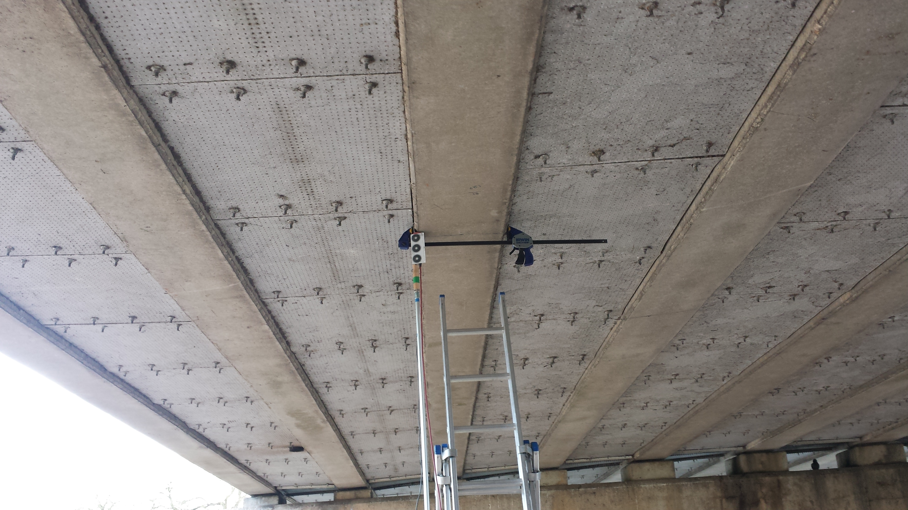 |
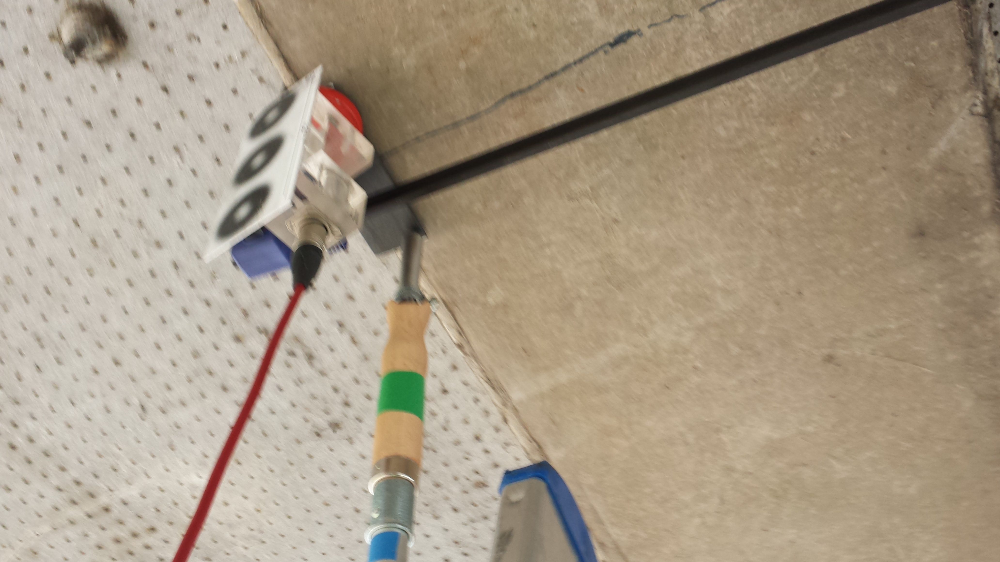 |
|---|
Measuring Deflection on Exe Bridge
View showing the Imetrum camera on the right tripod.
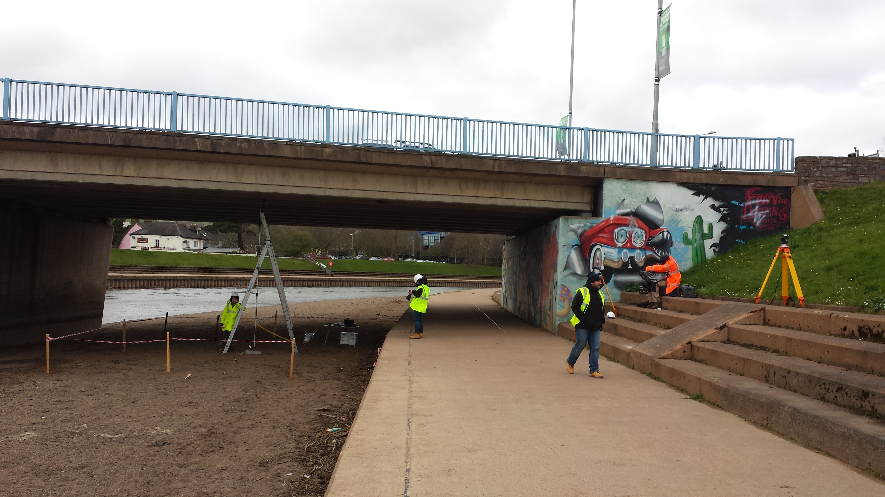
Measuring Deflection on Exe Bridge
Video of trucks passing at the times indicated in the plot.
Measuring Deflection on Exe Bridge

Strain measurements on Exe Bridge
Practice in VES lab using the BDI strain gauge data acquisition system.

|

|
|---|
Strain measurements on Exe Bridge
Practice attaching a strain gauge directly to a structure using Loctite glue.
Strain measurements on Exe Bridge
Fixing the strain gauge to a pre-installed spreader bar, with multiple gauges in place.
|
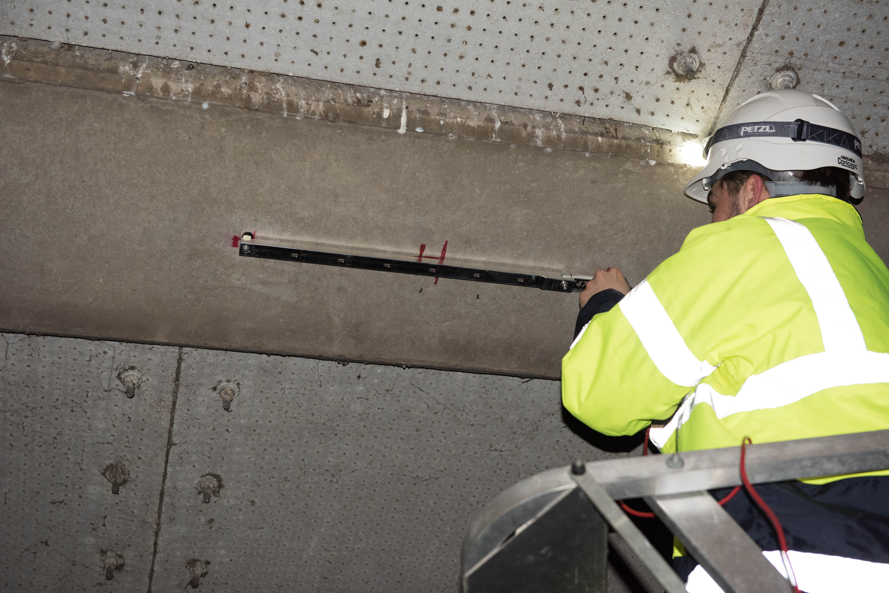 |
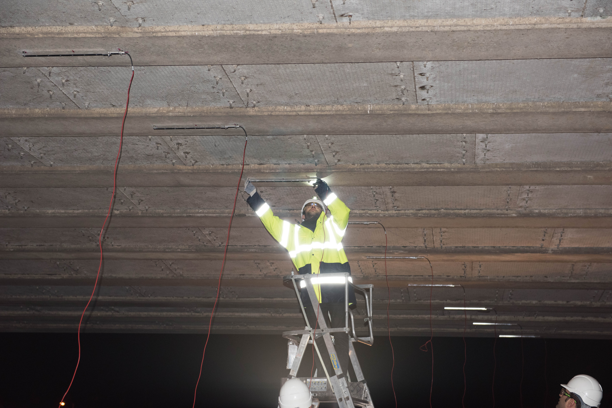 |
|---|
Strain measurements on Exe Bridge
Test load (aggregate truck) and monitoring setup.
|
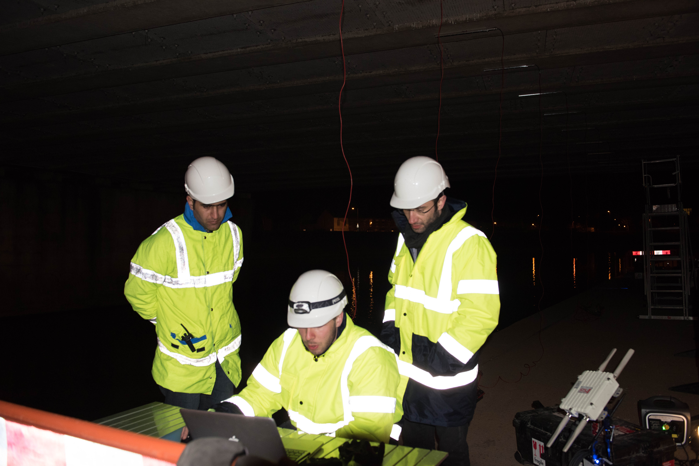 |
|---|
Strain measurements on Exe Bridge
Strain traces from multiple strain gauges.
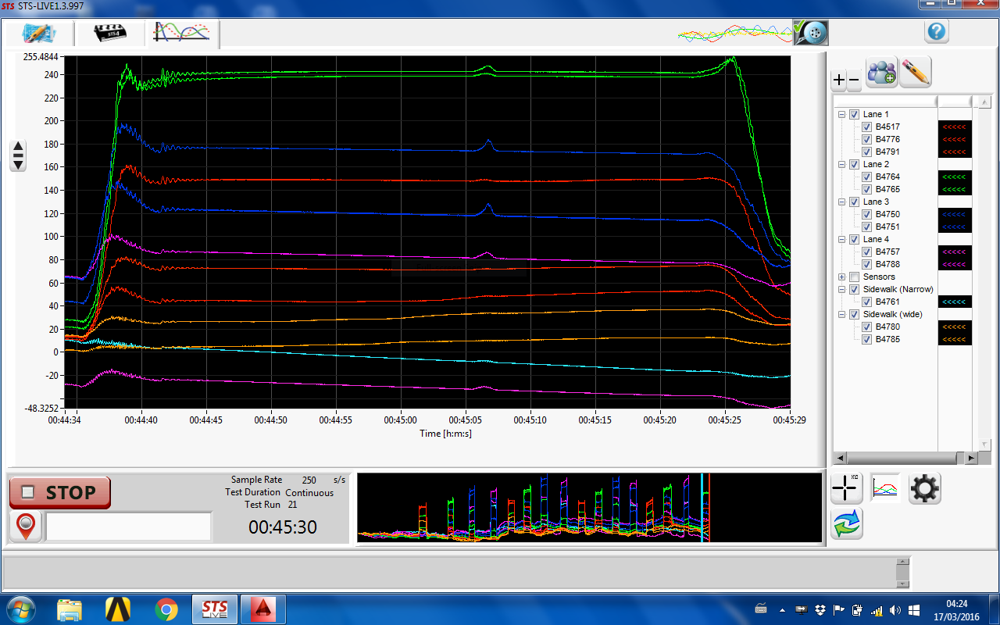
- The test data and plotting program are in the tutorial folder:
lecture_04_Demos/EXE_BRIDGE.
QFC stay-cable tension estimation
QFC stay-cable tension estimation
|
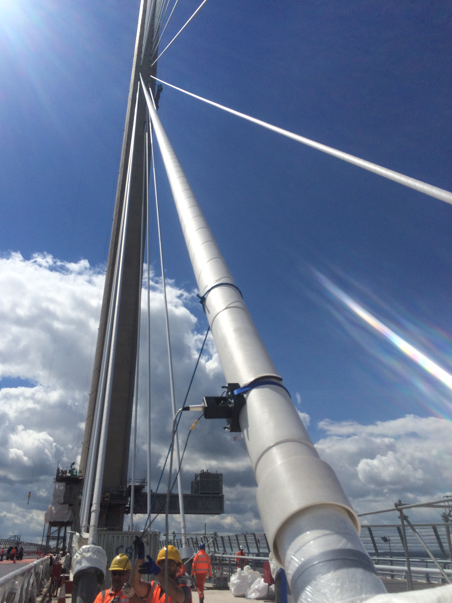 |
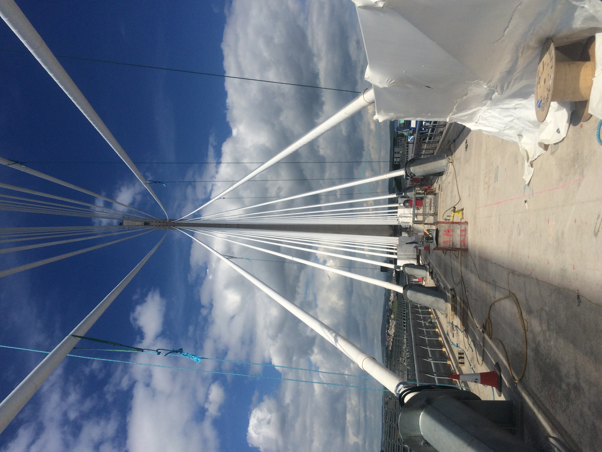 |
|---|
QFC stay-cable tension estimation
|
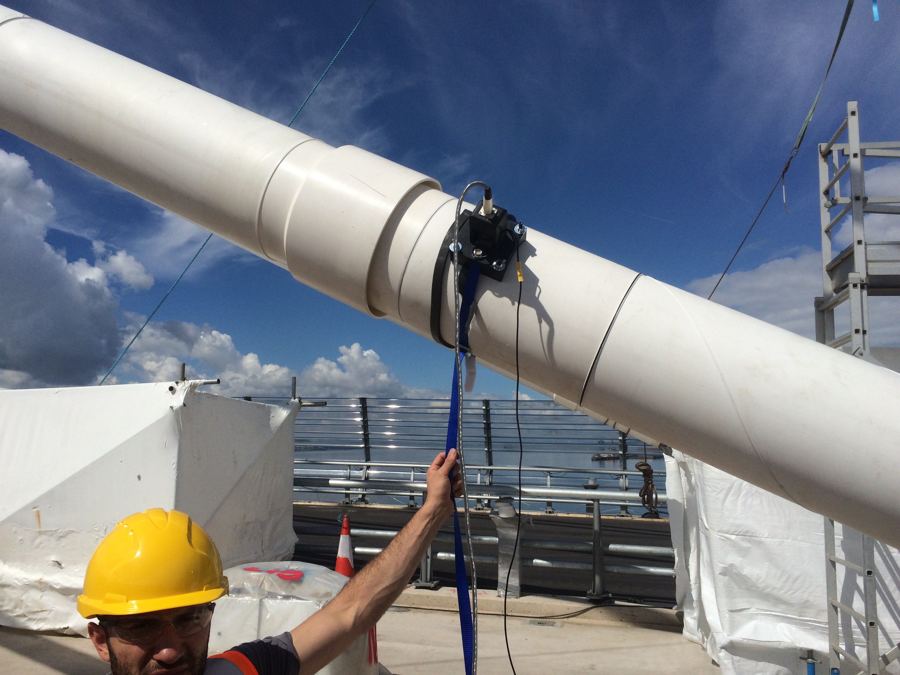 |
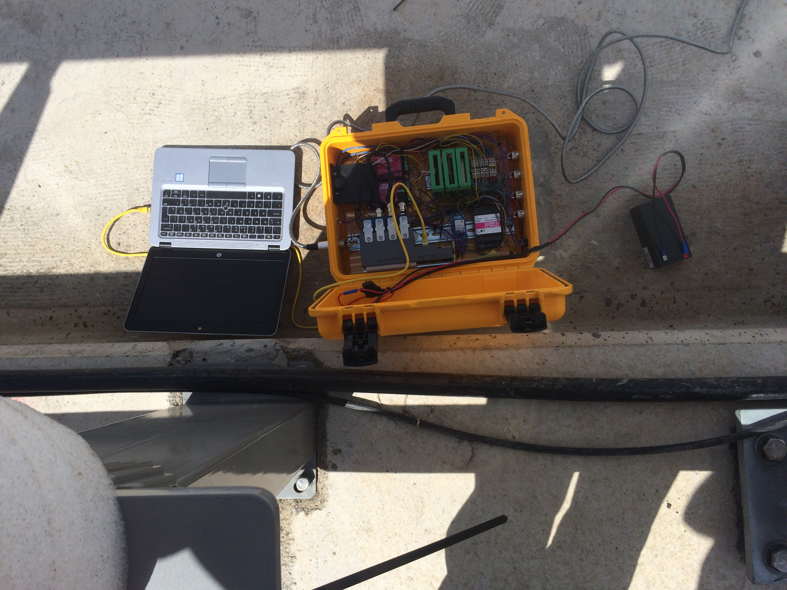 |
QFC stay-cable tension estimation
QFC stay-cable tension estimation
Biaxial acceleration
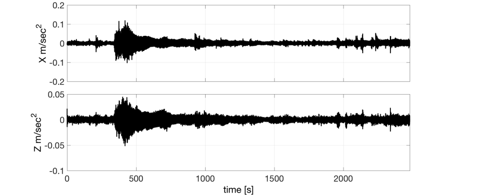
QFC stay-cable tension estimation
Spectrogram of the above accelerations
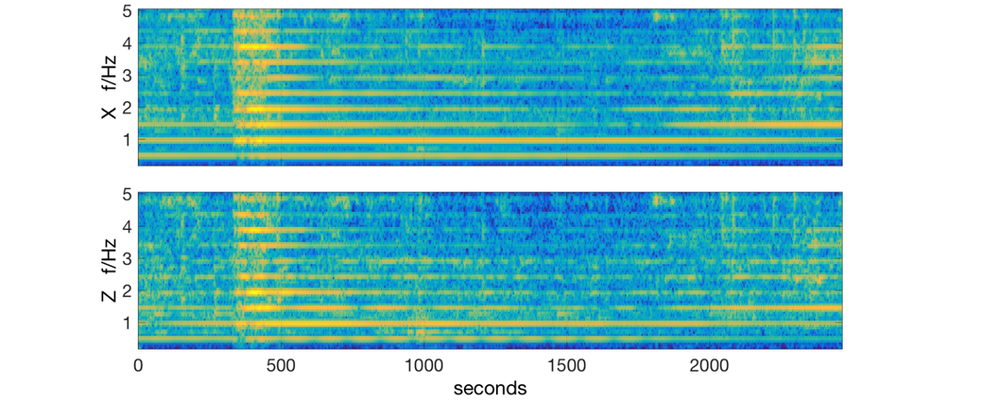
QFC stay-cable tension estimation
Bandpass filtered free decay
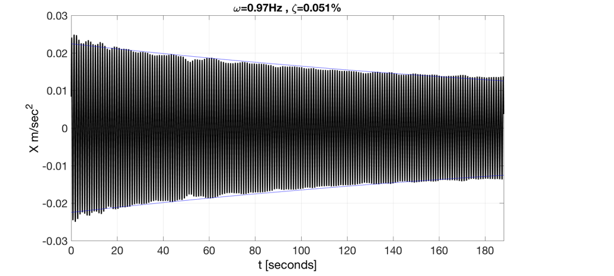
Calibrating accelerometers
How to calibrate accelerometers against each other using an electrodynamic shaker.
Shaker test of lightweight footbridge
The resonant response is very strong.
Using a dynamic signal analyser
Using a load cell
The video shows how to collect data using a load cell.
Two data files are in this folder: LOADCELL
- tree_new1_DSA: data file from the video, converted to MATLAB. It is for a mass of 90 kg (force 90 x 9.81 N) distributed across two load cells. Use it to find a calibration factor between the average voltage and applied load: \(A = V/N\).
- tree_new2_DSA: data file of voltages recorded using the load cells. Use your factor \(A\) to plot force (N) as a function of time.
Closure
SHM in action spans a wide spectrum of activities including
- Preparing sensors, daq system, software, etc
- Installing sensors and acquiring data on site
- Working in exciting environments
- Learning and using the state-of-the-art technologies and equipment
- Our laboratory is the real infrastructures